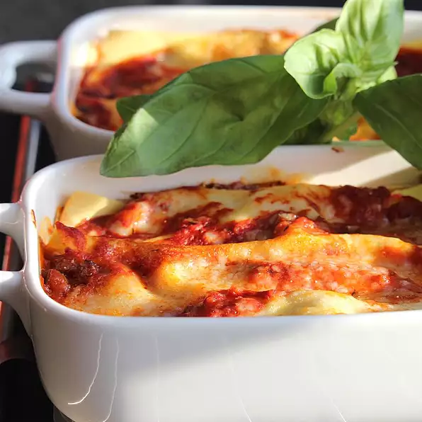

Lasagna

Cheese at Heart
Creamy bechamel and rich delicious meat sauce are layered with lasagna
noodles and cheese for an easy and delicious weeknight meal.
Ingredients
- 1 (9 ounce) box Barilla® Oven Ready Lasagne
- 1 quart milk
- 6 tablespoons butter
- 5 tablespoons all-purpose flour
- Salt and black pepper to taste
- ¼ teaspoon ground nutmeg
- 1 cup grated Parmesan cheese
- 1 (24 ounce) jar Barilla® Meat Sauce
- ½ cup fresh basil leaves, julienned
Steps
- Pre heat the oven to 375 degrees F.
-
For the bechamel, bring the milk to a simmer in a saucepan. Meanwhile in
a separate pan, melt butter; stir in flour and cook 2-3 minutes. Stir
the hot milk into the butter-flour mixture. Whisk vigorously and bring
to a simmer; cook for 5 minutes. Remove the pan from the heat. Season
with salt, pepper, nutmeg and 3/4 of cheese.
-
Pour 1/5 of the Barilla sauce and 1/5 of the bechamel into the bottom of
a 13x9 baking dish; top with basil. Cover with three noodles and repeat
for 3 layers. For the top layer add the remaining Parmigiano cheese and
basil. Cover with foil.
-
Bake until the corners are bubbling and slightly brown, about 20
minutes. Let the lasagna rest for 5 minutes before serving.
Bon Appétit